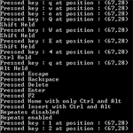

Keyboard Input |
Tutorials > GLUT > Keyboard Input
| View Full Source |
Introduction
 Most of your OpenGL applications will require interaction through some sort of input device. This will generally be the keyboard or the mouse. This tutorial will deal with how to capture and process messages from the keyboard.
As all operating systems deal with keyboard input differently, GLUT provides a simple set of functions to allow for cross-platform development.
This tutorial is built upon the previous tutorial. GLUT recognizes 2 kinds of keys. Normal keys and special keys. The special keys can be represented with the prefix GLUT_KEY_* and are shown below.
GLUT_KEY_F1 to GLUT_KEY_F12
GLUT_KEY_LEFT
GLUT_KEY_UP
GLUT_KEY_RIGHT
GLUT_KEY_DOWN
GLUT_KEY_PAGE_UP
GLUT_KEY_PAGE_DOWN
GLUT_KEY_HOME
GLUT_KEY_END
GLUT_KEY_INSERT
We will discuss how to capture presses of both normal and special keys.
Contents of main.cpp :
#include <iostream> #include <GL/glut.h> using namespace std;
Our first change is the addition of a boolean variable. When holding down a key, this will determine if we only get one event per key pressed or if successive events are triggered while the key is being held down.
bool ignoreRepeats = false;
No initialization is needed for this tutorial and nothing is being displayed.
bool init() { return true; } void display() { }
To capture messages from the keyboard, we need to have a keyboard function. This function must accept 3 parameters. The first being an unsigned char representing the key that has been pressed and the second and third representing the position of the mouse when the key was pressed.
void keyboard(unsigned char key, int x, int y) {
The key variable can contain any ascii value corresponding to a key such as 'd' or 'E'. A separate function will be used to capture special keys but you may be wondering about other keys. How are the backspace, enter, escape and delete keys captured? These keys can actually be represented by ascii values and are therefore capture within our normal keyboard function. These ascii values are shown below :
switch(key) { // Backspace case 8 : cout << "Pressed Backspace" << endl; break; // Enter case 13 : cout << "Pressed Enter" << endl; break; // Escape case 27 : cout << "Pressed Escape" << endl; break; // Delete case 127 : cout << "Pressed Delete" << endl; break;
For any other key pressed, we simply output the key along with the position at which it was pressed. Note that capturing the lowercase version of a character is not the same as capturing the uppercase equivalent ie. 'r' is different to 'R'.
default : cout << "Pressed key : " << (char)key << " at position : (" << x << "," << y << ")" << endl; break; }
Another useful feature is that of keyboard modifiers. These are the ctrl, shift and alt keys and can be held along with any other key. To retrieve these modifiers, the function glutGetModifiers is called. This function returns an int which determines the modifiers that have been held. Note that the glutGetModifiers function can only be called within a main input function such as the keyboard, special keyboard and mouse functions.
int mod = glutGetModifiers();
We check to see if any modifiers have been held and print out the result. Note that this method will not tell us if multiple modifiers have been held. This will be shown later in the tutorial.
switch(mod) { case GLUT_ACTIVE_CTRL : cout << "Ctrl Held" << endl; break; case GLUT_ACTIVE_SHIFT : cout << "Shift Held" << endl; break; case GLUT_ACTIVE_ALT : cout << "Alt Held" << endl; break; } }
Another function which may be useful is the function for determining when a key is lifted. The parameters of this function are the same as the function above. We print a short message when the 'a' key is lifted. Try holding in the 'a' key and notice how the message is only displayed upon releasing it.
void keyboardup(unsigned char key, int x, int y) { if (key == 'a') cout << "a key lifted" << endl; }
We will now explain how to capture special keys. A special keyboard function needs to be created accepting the same parameters except that the key parameter is an int rather than an unsigned char.
void special(int key, int x, int y) { switch(key) {
The 2 case labels below print out a result if either the F2 or up arrow key is pressed.
case GLUT_KEY_F2 : cout << "Pressed F2" << endl; break; case GLUT_KEY_UP : cout << "Pressed Up" << endl; break;
The next key we are going to capture is the insert key but this time we are going to make use of modifiers.
case GLUT_KEY_INSERT : { int modifiers = glutGetModifiers();
The result of glutGetModifiers consists of a number of bits indicating which modifiers have been held. These modifiers can be ORed together by using the OR(|) operator. This can be shown below.
if ( modifiers == (GLUT_ACTIVE_CTRL | GLUT_ACTIVE_ALT)) { cout << "Pressed Insert " << "with only Ctrl and Alt" << endl; }
The above approach will cause a message to be displayed if ONLY the ctrl and alt keys have been held.
If we do not mind if other keys are held in addition, we can use the AND(&) operator as shown below. Here you can hold down all 3 modifiers and the message will still be displayed.
else if (modifiers & GLUT_ACTIVE_CTRL && modifiers & GLUT_ACTIVE_ALT) { cout << "Pressed Insert " << "with Ctrl and Alt" << endl; } break; }
If you hold down a key, you will notice that text continues to be written to the console. This is because key repeats are enabled by default. This means that events are constantly triggered while holding down a key. This may not be desirable. You can get around this by making a call to the glutIgnoreKeyRepeat function. This function accepts one boolean value indicating whether to ignore key repeats or not. Below we enable and disable this feature by pressing the F1 key. After enabling ignoring of key repeats, you will find that you can hold a key and only one message is displayed.
case GLUT_KEY_F1 : ignoreRepeats = !ignoreRepeats; glutIgnoreKeyRepeat(ignoreRepeats); if (ignoreRepeats) cout << "Repeates disabled" << endl; else cout << "Repeats enabled" << endl; break; } } int main(int argc, char *argv[]) { glutInit(&argc, argv); glutInitWindowPosition(200, 200); glutInitWindowSize(200, 200); glutCreateWindow("02 - Keyboard Input"); glutDisplayFunc(display);
Now that we have created these functions, we need to let GLUT know about them. This is achieved in the same way as we did for the display function.
4 of the functions that can be called are :
glutKeyboardFunc
glutKeyboardUpFunc
glutSpecialFunc
glutSpecialUpFunc
Below, we call the 3 functions corresponding to the functions that we have provided.
glutKeyboardFunc(keyboard); glutKeyboardUpFunc(keyboardup); glutSpecialFunc(special); if (!init()) return 1; glutMainLoop(); return 0; }
A number of actions can be taken in this program. Try pressing a number of keys including the backspace, enter, delete and escape keys. Also try pressing a character key with and without a shift. You can see that uppercase and lowercase characters are treated differently. Pressing F2 or the up arrow will provide an example of special key processing.
Try pressing insert while holding ctrl and alt. Once this has been done, try the same action but this time with shift key. Notice the different messages that are displayed. A final test can also be to press F1 thus ignoring key repeats. Once this has been achieved, try holding a key and notice how only one message is displayed.
Well done. You should now have a thorough knowledge of how to capture keyboard presses using GLUT.
Please let me know of any comments you may have : Contact Me
| Source Files : |
| < Tutorial 01 - GLUT Window | Tutorial 03 - Mouse Input > |
All Rights Reserved, © Zeus Communication, Multimedia & Development 2004-2005
Read the Disclaimer
|
What tutorial would you like to see next? |
|
Useful Books : |
|
|
| Link to ZeusCMD |